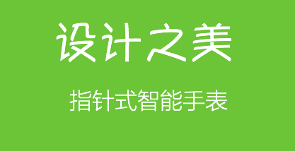
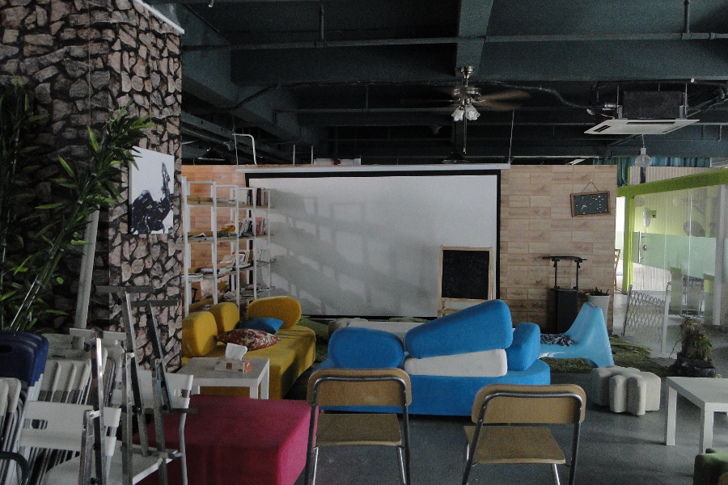
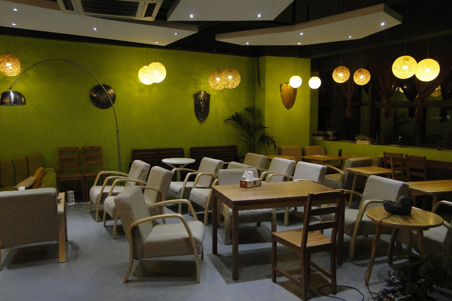

<!DOCTYPE html>
<html class=" js flexbox flexboxlegacy canvas canvastext webgl no-touch geolocation postmessage websqldatabase indexeddb hashchange history draganddrop websockets rgba hsla multiplebgs backgroundsize borderimage borderradius boxshadow textshadow opacity cssanimations csscolumns cssgradients cssreflections csstransforms csstransforms3d csstransitions fontface generatedcontent video audio localstorage sessionstorage webworkers applicationcache svg inlinesvg smil svgclippaths no-ie8compat"
  style=""
  id="ls-global"
  lang="zh-CN">
  <!--<![endif]-->
  <head _wxhkphogpkobbkjccgfifhfjlahnoocnan_="shake_1.0">
    <meta content="text/html; charset=UTF-8" http-equiv="content-type">
    <meta name="viewport" content="width=device-width, initial-scale=1, maximum-scale=1">
    <meta name="description" content="智能硬件，移动应用开发专家，o2o项目运营">
    <meta name="keywords" content="Android 应用 iOS 应用,APP 外包,嵌入式Linux, 蓝牙模块，BLE模块，Wifi模块,o2o，蓝点工坊 bluedrum work4blue 潮娘海鲜">
    <title>蓝点工坊 | 移动应用开发专家 | 智能硬件解决方案 | iOS Android APP | 嵌入式Linux | 硬件产品</title>
    <link rel="icon" href="favicon.ico" type="image/x-icon">
    <link rel="shortcut icon" href="http://bluedrum.cn/favicon.ico" type="image/x-icon">
    <link rel="profile" href="http://gmpg.org/xfn/11">
    <link rel="alternate" type="application/rss+xml" title="蓝点工坊 » Feed" href="./feed">
    <link rel="alternate" type="application/rss+xml" title="蓝点工坊 » 评论Feed" href="./comments/feed">
    <link rel="stylesheet" id="wpsqt-main-css" href="./files/main.css" type="text/css"
      media="all">
    <link rel="stylesheet" id="layerslider_css-css" href="./files/layerslider.css"
      type="text/css"
      media="all">
    <link rel="stylesheet" id="wpProQuiz_front_style-css" href="./files/wpProQuiz_front.min.css"
      type="text/css"
      media="all">
    <link rel="stylesheet" id="page-list-style-css" href="./files/page-list.css"
      type="text/css"
      media="all">
    <link rel="stylesheet" id="theme-style-css" href="./style.css" type="text/css"
      media="screen">
    <link rel="stylesheet" id="theme-fonts-css" href="./files/fonts.css" type="text/css"
      media="screen">
    <link rel="stylesheet" id="theme-adapt-css" href="./files/adaptive.css" type="text/css"
      media="screen">
    <link rel="stylesheet" id="theme-retina-css" href="./files/retina.css" type="text/css"
      media="screen">
    <link rel="stylesheet" id="jackbox-css" href="./files/jackbox.css" type="text/css"
      media="screen">
    <link rel="stylesheet" id="jPlayer-css" href="./files/jquery.jPlayer.css" type="text/css"
      media="screen">
    <link rel="stylesheet" id="isotope-css" href="./files/jquery.isotope.css" type="text/css"
      media="screen">
    <!--[if lt IE 9]>
<link rel='stylesheet' id='theme-ie-css'  href='http://www.bluedrum.cn/wp-content/themes/increase/css/ie.css?ver=1.0.0' type='text/css' media='screen' /><![endif]-->
    <!--[if lt IE 9]>
<link rel='stylesheet' id='theme-ieCss3-css'  href='http://www.bluedrum.cn/wp-content/themes/increase/css/ieCss3.php?ver=1.0.0' type='text/css' media='screen' /><![endif]-->
    <link rel="stylesheet" id="cmsms-google-font-1-css" href="./files/css" type="text/css"
      media="all">
    <link rel="stylesheet" id="wpcountdown-css" href="./files/main2.css" type="text/css"
      media="all">
    <script type="text/javascript" async="" src="./files/ga.js"></script>
    <script type="text/javascript" src="./files/jquery-2.0.3.min.js"></script>
    <script type="text/javascript" src="./files/site.js"></script>
    <script type="text/javascript" src="./files/modernizr.custom.all.min.js"></script>
    <script type="text/javascript" src="./files/respond.min.js"></script>
    <script type="text/javascript" src="./files/comment-reply.min.js"></script>
    <script type="text/javascript" src="./files/layerslider.kreaturamedia.jquery.js"></script>
    <script type="text/javascript" src="./files/jquery-easing-1.3.js"></script>
    <script type="text/javascript" src="./files/jquerytransit.js"></script>
    <script type="text/javascript" src="./files/layerslider.transitions.js"></script>
    <script type="text/javascript" src="./files/jquery-migrate.min.js"></script>
    <script type="text/javascript" src="./files/countdown.js"></script>
    <meta name="description" content="智能硬件，移动应用开发专家，o2o项目运营">
    <meta name="keywords" content="Android 应用 iOS 应用,APP 外包,嵌入式Linux, 蓝牙模块，BLE模块，Wifi模块,o2o，蓝点工坊 bluedrum work4blue 潮娘海鲜">
    <link rel="canonical" href="./index.html">
    <link rel="icon" href="favicon.ico" type="image/x-icon">
    <link rel="shortcut icon" href="favicon.ico" type="image/x-icon">
    <style type="text/css">body { background-color : #f5f5f5; background-image : url(img/bg.jpg); background-position : top center; background-repeat : repeat-x; background-attachment : fixed; }#header > .header_inner { height : 184px; } #header > .header_inner > a.logo { top : 30px; left : 0px; } #header > .header_inner > a.logo, #header > .header_inner > a.logo > img { width : 298px; height : 60px; } #header nav { top : 117px; right : 0px; ; } #header .wrap_social_icons { top : 40px; right : 0px; } #header .header_html { top : 10px; right : 0px; } @media only screen and (max-width : 1023px) { #header > .header_inner > a.logo { top : auto; left : auto; } #header > .header_inner { height : auto; } #header nav { top : auto; right : auto; } #header .wrap_social_icons { top : auto; right : auto; } } </style>
    <style type="text/css">.broken_link, a.broken_link {
	text-decoration: line-through;
}</style>
    <style type="text/css">.cj-tween{-webkit-transition-property:none !important;}</style>
    <link rel="stylesheet" href="./files/skin.css" type="text/css">
  </head>
  <body>
  </body>
</html>
<body class="home page page-id-5673 page-template-default" youdao="bind" style="" >
<a name="移动APP及嵌入式产品开发专家"></a>
<a name="APP外包服务，IT开发培训，企业内训"></a>
<a name="top"></a>		
<!-- _________________________ Start Page _________________________ -->
<section id="page" class="hfeed site">

<!-- _________________________ Start Container _________________________ -->
<div class="container">
	
<!-- _________________________ Start Header _________________________ -->
<header id="header">
	<div class="header_inner">
	<div class="custom_header"><div class="wrap_social_icons"><ul class="social_icons">
		<li>
	<a target="_blank" href="http://bluedrum.taobao.com" title="蓝点工坊淘宝官方店">
		
	</a>
</li>
<li>
	<a target="_blank" href="http://wp.qq.com/wpa/qunwpa?idkey=21f778b451a485faeaea915fdabebf53160540dbe3a7d5faf0f549bc083d799c"" title="加入蓝点工坊QQ群">
		
	</a>
</li>
<li>
	<a target="_blank" href="about.html#weixin" title="点击进入微信">
		
	</a>
</li>
<li>
	<a href="http://wpa.qq.com/msgrd?v=3&uin=568615&site=qq&menu=yes" title="QQ在线交谈">
		
	</a>
</li>
<li>
	<a target="_blank" href="http://weibo.com/work4blue" title="蓝点工坊微博">
		
	</a>
</li>
<li>
	<a href="about.html#contact-address" title="联络我们">
		
	</a>
</li>
</ul><div class="cl"></div><a href="http://www.bluedrum.cn/#" class="social_toggle"><span></span></a></div>
</div>	<a href="index.html" title="蓝点工坊" class="logo">
	
</a>
		<a class="responsive_nav" href="javascript:void(0);"><span></span></a>


		<div class="cl"></div>
		<!-- _________________________ Start Navigation _________________________ -->
		<nav role="navigation" style="" class="">
			<ul id="navigation" class="navigation">
				
<li id="menu-item-5607" class="menu-item menu-item-type-post_type menu-item-object-category menu-item-5607">
      	<a title="智能硬件方案" href="apps-android-ios.html">
      		<span>智能硬件方案</span></a>
          
</li>
<li id="menu-item-11192" class="menu-item menu-item-type-taxonomy menu-item-object-category menu-item-11192">
<a href="apps-bluetooth.html"><span>APP外包</span></a>


<li id="menu-item-37900" class="menu-item menu-item-type-post_type menu-item-object-page menu-item-37900">
	<a  href="http://bluedrum.taobao.com"><span>在线商城</span></a></li>
		
		<li id="menu-item-11181" class="menu-item menu-item-type-taxonomy menu-item-object-page menu-item-11181">
<a href="resources.html"><span>产品库</span></a></li>	

<li id="menu-item-36900" class="menu-item menu-item-type-post_type menu-item-object-page menu-item-36900">
	<a title="关于蓝点工坊" href="about.html"><span>关于我们</span></a>

<!--
<ul class="sub-menu">
	           <li id="menu-item-12579" class="menu-item menu-item-type-post_type menu-item-object-page menu-item-12577">
		            <a href="apps-android-ios.html"><span>智能手环方案</span></a></li>
	<li id="menu-item-12577" class="menu-item menu-item-type-post_type menu-item-object-page menu-item-12577">
		<a href="apps-driver.html"><span>智能面板</span></a></li>
	<li id="menu-item-12576" class="menu-item menu-item-type-post_type menu-item-object-page menu-item-12576">
		<a href="apps-qt.html"><span>智能门锁</span></a></li>
</ul>
</li>

-->
				
</ul>
		<div class="cl"></div>
		</nav>
		<div class="cl"></div>
		<!-- _________________________ Finish Navigation _________________________ -->
	</div>
	<div class="cl"></div>
</header>
<!-- _________________________ Finish Header _________________________ -->
		
<!-- _________________________ Start Middle _________________________ -->
<section id="middle">

<input name="htmlTitle" type="hidden" id="htmlTitle" value="全流程开发服务" />
<div class="wrap_lay_slider">
<script type="text/javascript" src="./files/hxy-layerslider.js" >
</script>
         
<div id="layerslider_2" class="ls-wp-container ls-container ls-increase" style="width: 1160px; height: 480px; margin: 0px auto; visibility: visible;">
 <div class="ls-webkit-hack"></div>
 
 <div class="ls-inner" style="background-color: rgb(255, 255, 255); width: 1160px; height: 480px;">
 <div class="ls-lt-container ls-overflow-hidden" style="width: 1160px; height: 480px;">
 	
 <div class="ls-lt-tile ls-3d-container" style="width: 1160px; height: 480px;">
 	
 
 <div class="ls-3d-box" style="width: 0px; height: 0px; -webkit-transform: translate3d(0px, 0px, -580px) rotateX(0deg) rotateY(90deg) rotateZ(0deg) scale3d(1, 1, 1);">
 <div class="ls-3d-back" style="width: 1160px; height: 480px; -webkit-transform: translate3d(-580px, -240px, -580px) rotateX(0deg) rotateY(180deg) rotateZ(0deg) scale3d(1, 1, 1);">
 </div>
 
 
 	
 
 <div class="ls-3d-bottom" style="width: 1160px; height: 1160px; -webkit-transform: translate3d(-580px, -340px, 0px) rotateX(-90deg) rotateY(0deg) rotateZ(0deg) scale3d(1, 1, 1);"></div>
 <div class="ls-3d-top" style="width: 1160px; height: 1160px; -webkit-transform: translate3d(-580px, -820px, 0px) rotateX(90deg) rotateY(0deg) rotateZ(0deg) scale3d(1, 1, 1);"></div>
 
 
 </div></div></div>
 
 <!--start 第1屏-->	
 <div class="ls-layer" style="width: 0px; height: 480px; visibility: visible; display: none; left: auto; right: 0px; top: 0px; bottom: auto;">
 
 <!-- ls-tn 是缩略图 -->
 
 
 
 
 
 
 <a href="compose-serivce.html" target="_blank" class="ls-link" style="width: auto; height: auto; padding: 0px; border-width: 0px; left: 0px; top: 0px;"></a></div>
 <!--stop 第1屏-->
 </div>
</div> 
	

<div class="content_wrap fullwidth">

<!--_________________________ Start Content _________________________ -->
<section id="middle_content" role="main">
	
	


	<div class="entry">
		<div class="cmsms_cc">
			
			<a name="online-design"></a>
	<!--  联络地址 --->		
			<div class="one_half first_column" data-folder="column" data-type=""><div data-folder="text" data-type=""><p>
				<a class="button" href="#concept">全流程服务的概念</a> 
					<a class="button" href="#benefits">优点</a> 
	        <a class="button" href="#how-to-do">如何操作</a> 
	        <a class="button" href="#case">成功案例</a>
	 
		
			
		<p></p>
				
		
		</div></div>
			<div class="one_half" data-folder="column" data-type=""><div data-folder="text" data-type="">
				<h2 style="text-align: center;">什么是全流程开发服务</h2><h6 style="text-align: center;"></h6>
				
				<p>对于创业型和中小型企业而言，因为薪金和环境原因，招不到合适的人，招到人的做不事，培养的新人跑掉留不住人。
					这个情况对于技术导向型企业，如嵌入式产品类或移动互联网类的企业尤其严重。</p>

      <p> 很多企业在开始阶段采用外包开发的形式，完全的外包有很多弊病。比如后期bug维护不及时，微调开发无响应，后续无人开发等。</p>
      <p> 小型企业招人可选范围不大，很多是从应届生和培训生中选材，但是往往初期需要一段适应期才能全速工作，常常是上手后就跳槽走人。</p>	
      <p> 另外新入行的工程师的技能是合格，但是在项目中的技术选型，流程管理以及关键技术问题等无人指导，往往造成项目严重延误。</p>
     <p>蓝点工坊基于多年开发和培训经验，针对这一些情况提出完整解决方案： 1.首先选材一些技术新人，协同我们进行项目外包开发</p>
      <p> 2.当项目完工后，由企业挑选合格人员入职，继续后续开发。</p>
      <p> 3.在后期我们也不断提供技术及项目管理流程的咨询，以协助顺利开发项目。</p>
      <p> 全流程服务相当于把企业传统的试用期或内训期变成外包项目期，在保证开发质量的进度情况，同时进行人员选材和内训工作。</p>
      </div></div>
   
   
  
		  		   
   <!-- stop contact -->
   
   
   	
<!-- start we do -->	
	<a name="how-to-do"></a>
	<div class="one_first first_column" data-folder="divider" data-type="divider"><div class="divider"></div></div>
	
			 
	<div class="one_half first_column" data-folder="column" data-type=""><div data-folder="text" data-type="">
		
		<h2 style="text-align: center;">全流程服务优点</h2>
		<h6 style="text-align: center;"></h6>
		     <p> 全流程开发服务有很多优点，一是让小企业在没有花费迅速有较大选材面，无需到招聘网站投钱找人。</p>
		     <p>	二.可以在外包进程中选择合适开发工程师，避免靠简历和面试短时判断来招到不合适的员工。并且薪资水平不会太高。</p>
		     	<p>三.由因初期是由资深工程师带队进行开发，可以短期间开发较高质量的产品。 </p>
        <p>四.接手项目的员工就是当初参加外包项目人员，在项目无需交接和试用，即直接进行后续开发，企业是会减少大量培训和延误时间。 </p>
        <p>五.后续开发，会有技术和管理的咨询，避免因项目无人带而造成员工的流失。</p>
 	</div></div>
 	
 	<div class="one_half " data-folder="column" data-type="">
		
		<div data-folder="text" data-type=""><p>
			</p></div></div>

<!-- stop --> 	

<!-- office -->

<a name="my-office"></a>
 	
		  <div class="one_first first_column" data-folder="divider" data-type="divider">
		  	<div class="divider"></div></div>
		
			
			<div class="one_half first_column" data-folder="column" data-type=""><div data-folder="text" data-type="">
				<p></p>
				</div></div>
				
				<div class="one_half " data-folder="column" data-type=""><div data-folder="text" data-type="">
		<h2 style="text-align: center;">如何操作</h2><h6 style="text-align: center;"></h6>
		<p>主要面向嵌入式产品和移动互联网企业，缺少底层和应用开发人员企业，如Linux C,Android,iOS,QT等。</p>
			<p>双方首先按外包流程完整进行</p>
			<p>企业在在开发人员面试招收员工，或指定人员参与项目。</p>
		<p>外包项目结束后，正式转入咨询流程。</p>
      
      </div></div>
	<!-- stop office -->
 	
 	
				
		<!-- 名字来源 -->
   <a name="case"></a>
 	<div class="one_first first_column" data-folder="divider" data-type="divider">
		  	<div class="divider"></div></div>   		
<div class="one_first first_column" data-folder="column" data-type=""><div data-folder="text" data-type=""><p style="text-align: right;">
	</p></div></div>
	
	<div class="one_half first_column" data-folder="column" data-type=""><div data-folder="text" data-type=""><h2 style="text-align: center;">
		成功案例</h2><h6 style="text-align: center;"></h2>
			<p> 1）世界通公司,手机IM，尹择峰，周玉芳作为J2ME、Android,Symbian的开发进行项目开发，后正式入职。</p>
			<p> 2)西霸迅龙公司，NAS产品产家。龙鑫东，刘宇择作为Linux内核及应用开发人员进行项目开发，后正式入职。 </p>
      <p> 3)牛涛，童君作为Linux内核和QT开发人员进行项目开发，后正式入职。 </p>
      </div></div>
<div class="one_half" data-folder="column" data-type="">
<p></p>
</div>

<!-- stop 名字来源 -->
		
				
	
	
</section>
<!-- _________________________ Finish Content _________________________ -->

<div class="cl"></div>
</div>
</section>
<!-- _________________________ Finish Middle _________________________ -->


<!-- _________________________ Start Bottom _________________________ -->
<section id="bottom">
<div class="bottom_inner">
<div class="one_fourth"><aside id="text-20" class="widget widget_text"><h2 class="widgettitle">壁球运动</h2>	
			<div class="textwidget">
				<a href="squash-club.html">蓝点壁球俱乐部</a><br>
				<a href="squash-faq.html">壁球FAQ</a><br>
        <a href="squash-video.html">壁球视频</a><br>
<br></div>
		</aside></div><div class="one_fourth"><aside id="text-21" class="widget widget_text"><h2 class="widgettitle">开发课程</h2>
					<div class="textwidget">
					  		<a href="http://www.bluedrum.cn/training-kernel-driver.html"><span>Android/Linux 内核/驱动班</span></a><br>
						  
						  	<a href="http://www.bluedrum.cn/training-intermediate-course"><span>Android产品班</span></a><br>
						  
						  	<a href="http://www.bluedrum.cn/training-photoshop"><span>Android/iOS应用开发班</span></a><br>

</div>
		</aside></div><div class="one_fourth"><aside id="custom-contact-info-3" class="widget widget_custom_contact_info_entries">
			<h2 class="widgettitle">深圳市蓝点工坊科技有限公司</h2>
			<span class="contact_widget_address">南山区蛇口花样年.美年国际广场1栋414</span><br>
			<span class="contact_widget_city">深圳市</span><br><span class="contact_widget_state">中国</span><br>
			<span class="contact_widget_zip">518067</span><br><span class="contact_widget_phone"><span style="display:inline-block; width:35%;">Phone:13282426974</span> </span><br>
			<span class="contact_widget_email"><span style="display:inline-block; width:35%;">Email:&nbsp;</span><a href="mailto:sales@bluedrum.cn">sales@bluedrum.cn</a></span><br></aside></div>
				<div class="one_fourth"></div></div>
</section>
<!-- _________________________ Finish Bottom _________________________ --><a href="javascript:void(0);" id="slide_top" style="display: none;"><span id="slide_top_hover"></span></a>
</div>
<!-- _________________________ Finish Container _________________________ -->

<!-- _________________________ Start Footer _________________________ -->
	<footer id="footer" role="contentinfo">
	<span class="copyright"></span>
<a href="about.html#contact-address">联络蓝点工坊科技有限公司</a> | <a href="apps-android-ios.html">开发应用</a> 　　　　　　　　　　　　版权所有 © www.8zlink.com www.bluedrum.cn 备案号： <a href="http://www.miibeian.gov.cn/">粤ICP备18044452号</a>	</footer>
<!-- _________________________ Finish Footer _________________________ -->

</section>
<!-- _________________________ Finish Page _________________________ -->


<script type="text/javascript">
var _bdhmProtocol = (("https:" == document.location.protocol) ? " https://" : " http://");
document.write(unescape("%3Cscript src='" + _bdhmProtocol + "hm.baidu.com/h.js%3Ff6309112c5a0c8796ab7dc146e1e4a9c' type='text/javascript'%3E%3C/script%3E"));
</script>
<script src="./files/h.js" type="text/javascript"></script>
<script type="text/javascript">
	jQuery(document).ready(function () {
		jQuery('.cmsms_social').socicons( {
			icons : 'nujij,ekudos,digg,linkedin,sphere,technorati,delicious,furl,netscape,yahoo,google,newsvine,reddit,blogmarks,magnolia,live,tailrank,facebook,twitter,stumbleupon,bligg,symbaloo,misterwong,buzz,myspace,mail,googleplus',
			imagesurl : 'http://www.kato.hk/wp-content/themes/increase/img/share_icons/'
		} );
	} );
</script>
	<script type="text/javascript">
		jQuery(document).ready(function() { 
			(function ($) { 
				$(window).scroll(function () { 
					var sT = $(window).scrollTop();
					
					if (sT > 220) { 
						if ($('#header nav').addClass('navi_scrolled').is(':animated')) {
							return false;
						} else {
							$('#header nav').addClass('navi_scrolled').animate( { 
								top : 0,
								opacity : 1 
							}, 500);
						}
					} else { 
						$('#header nav').removeClass('navi_scrolled').stop().attr( { style : '' } );
					}
				} );
			} )(jQuery);
		} );
	</script>

<script type="text/javascript" src="./files/jquery.easing.min.js"></script>
<script type="text/javascript" src="./files/jackbox-lib.js"></script>
<script type="text/javascript" src="./files/jackbox.js"></script>
<script type="text/javascript" src="./files/jquery.script.js"></script>
<script type="text/javascript" src="./files/jquery.jPlayer.min.js"></script>
<script type="text/javascript" src="./files/jquery.jPlayer.playlist.min.js"></script>
<script type="text/javascript" src="./files/jquery.tweet.min.js"></script>


<a href="#top" id="slide_top">To Top</a></body>
<script type="text/javascript">
	function initHtml(){
		    var x= document.getElementById("htmlTitle").value; 
		    if(x)
		      document.title = x + ' | '+ document.title;     
    }
    
    initHtml();
	</script>	
	</html>